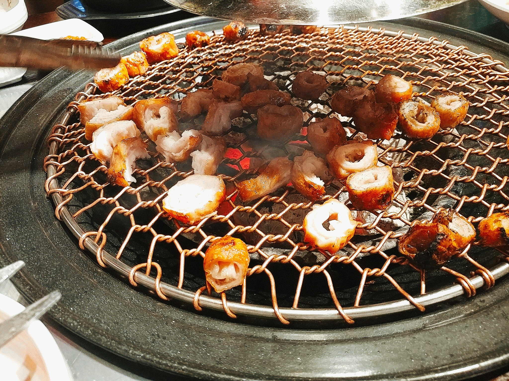

오늘은 신시가지에 있는 양대감을 가봤어요ㅎㅎㅎ 소양&대창구이 전문점이기도 하구 제주 통도야지 돼지고기 소금구이도 전문점이네요. 제주고기가 좀 많이 맛있쥬~ (백선생님이 오셨다 가셨나요ㅋㅋ) 간판은 화려하네요. 눈에 확 띨만큼요.ㅎ 그만큼 맛도 보장한다는 뜻이겠쥬~ 저희는 돼지막창(600g) 주문을 외쳐 봅니다. 반찬은 그다지 많지는 않구요. 딱 정갈하게 먹을꺼만 있네요. 저희가 구우려고 했는데 사장님이 너무 친절이 구워주시네요. 여기는 직원들이 손님테이블 돌아가면서 하나하나 구워주네요 (오~~~) 파채 대신 나오는 청량고추의 식감이 아삭아삭하니 알싸하고 매콤한 맛입니다. 막창과 같이 먹으니 느끼하지도 않고 훨씬 맛있네요~ 돼지막창 정말 못하는집 가면 냄새 엄청 나는데.. 여긴 냄새 없이 맛도 그냥 엄지척 해주고 싶습니다.ㅎㅎㅎ 다음에 또 가고 싶네요ㅜㅜㅜ